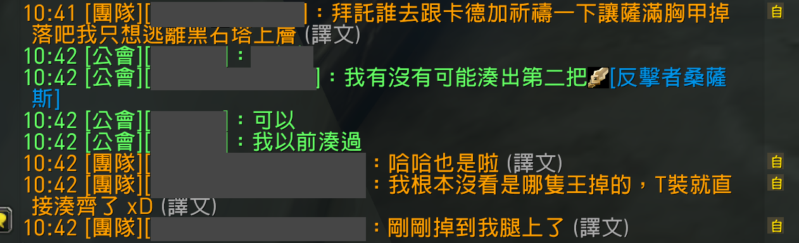

遊戲聊天框裡老外打的英文，直接變成中文。你打中文，按 Enter 會先變成英文，再按一次 Enter 送出。

瀏覽器如果問要不要保留，選「保留」。
把壓縮檔解開，裡面有兩個資料夾，兩個都放進遊戲的插件資料夾：
World of Warcraft\_forever_\Interface\AddOns
是 _forever_，不是 _classic_ 或 _retail_。跟裝其他插件一樣。
打開剛剛放進去的 ChatTranslate_Setup 資料夾，在 一鍵設定.bat 上點兩下。
如果跳出藍色的「Windows 已保護您的電腦」：按「其他資訊」→「仍要執行」。第一次會自動下載需要的東西，等一兩分鐘。
它會自動打開 Google 的頁面：登入 → 按 Create API key（建立 API 金鑰） → 複製 → 回到黑色視窗按滑鼠右鍵貼上 → 按 Enter。
金鑰是你自己的，不要貼給別人，也不要截圖外流。
先確認插件有打開：角色選擇畫面左下角「插件」，「聊天翻譯」要打勾。再到遊戲裡打 /reload。還是不行，打 /ct 開設定，按「完整檢查」，照它說的做。
遊戲畫面最上面那一條不能被別的視窗蓋住（它靠讀畫面頂端一條很細的色塊運作）。把蓋住的視窗移開，再打 /reload。
找個不在戰鬥的空檔打 /reload，就會補滿。
每句話右邊有個「自」或「譯」的小按鈕，點它就能看原文，也能在裡面打中文回話。
不會。懶人包已經把第一個聊天分頁的公會設成不翻譯。你自己另外開的分頁要自己設，看下一題。其他頻道臨時不想翻，在中文前面加一個 ! 就會直接送出。
分頁上有「自」的(自動翻譯分頁)，會把它顯示的所有頻道都翻譯，包括公會。如果你把公會頻道加進這種分頁(例如自己開的隊伍頁)，公會的英文也會被翻。
解法:在那個分頁上按右鍵 →「設定」→ 把「公會對話」那一列的「自動翻譯」取消勾選。公會照樣顯示，只是不翻，你在公會打中文也會直接送出。
每個開了自動翻譯的分頁都要各自設定一次(懶人包只幫第一個分頁設好)。中文訊息本來就不會翻。
WIM 設定 → 視窗 → 彈出規則，把各分頁的「僅在 WIM 中顯示」取消。
譯文可能不會顯示在聊天框。打 /ct，把「點『譯』之後」改成開翻譯視窗，或關掉 EllesmereUI 的聊天模組。
遊戲裡打 /ct 可以改所有設定。要移除：打開 ChatTranslate\Tool\ChatTranslate.bat，選「8. 解除安裝」。
這個插件是巴哈玩家做的 ChatTranslate（GPL-3.0），懶人包裡是原版，只多了一個幫你設定好的小工具。原作者說明（巴哈）
DC 語音裡老外講的英文，即時變成中文字幕，浮在遊戲畫面上（只有你自己看得到）。你講中文，它也能顯示英文讓你照著唸。
這個不是插件，不用放進 AddOns。瀏覽器如果問要不要保留，選「保留」。
解到哪裡都可以（例如桌面）。點兩下 WowVoiceSub.exe。
如果跳出藍色的「Windows 已保護您的電腦」：按「其他資訊」→「仍要執行」。
到 Groq（免費） 註冊，按 Create API Key，把 gsk_ 開頭那一整串複製下來。
金鑰只會顯示一次，先複製好。常打團、怕免費額度不夠，可以改用 OpenRouter（儲值 10 美金可以用很久）。
分頁 1「聽英文」：選 Windows 即時輔助字幕。
分頁 2「翻中文」：勾 用 AI 翻譯，服務選 Groq（或 OpenRouter），貼上金鑰，模型選 openai/gpt-oss-120b。
分頁 3、4 不用動，按 儲存並開始。
第一次 Windows 會要你下載英文語音套件，按確定等它裝完。
按鍵盤 Win + Ctrl + L 手動開一次 Windows 的即時輔助字幕，等語音套件裝好後關掉，再開 WowVoiceSub。
Windows 即時輔助字幕的字幕條右上角齒輪 → 喜好設定，語言選「英文（美國）」，不要勾「包含麥克風音訊」。
Windows 10 沒有即時輔助字幕，要改用 Chrome：用 Chrome 開 discord.com 網頁版進語音 → Chrome 設定 → 無障礙 → 打開「即時字幕」→ WowVoiceSub 分頁 1 改選「Chrome 即時字幕」。細節看壓縮檔裡的「使用說明.txt」。
下載新的，解壓縮蓋掉舊的 exe 就好，設定會保留。
壓縮檔裡的「使用說明.txt」有完整說明；也可以到公會 DC 的「美服環境一鍵包」頻道問。